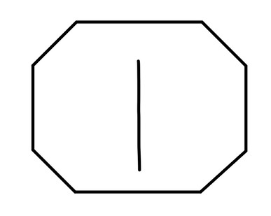
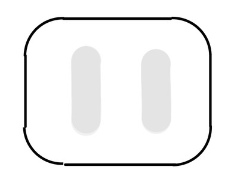
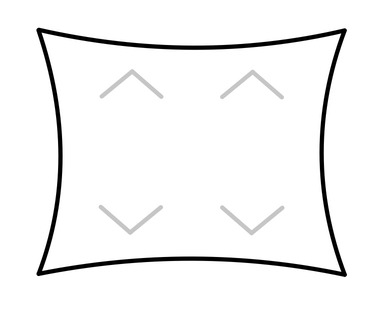

Goals
- Smart heath can be afforable and accessible.
- Weight tracking should be easy and rewarding.
- User information is under user control.
Health is for everyone
— Founder/CEO Cady Heron
Design Constraints
Requirements from HQ
- Cost: under $100 MSRP
-
Strength: supports up to 300lbs (140kg)
- note from Damian:
likely will need unibody metal contruction
- note from Damian:
- Size: approximately 45cm wide × 35cm long and <5cm thick
- Design: unique look
- stands out as a scale
- fits into living spaces
Targets
- Battery: One year of daily measurements
- Ambiently useful
Vote on Design Direction
Designs
Geometric design, Rounded design, and Hyperbolic design
  Results
- Hyperbolic (3 votes)
- Geometric (2 votes)
- Rounded (1 vote)
Brainstorming
Hardware
Motion detecting PIR (Passive IR) is affordable, low energy, and allows for ambient usefulness.
— Regina
E-Ink display uses less energy, and can display ambient information without drawing current.
— Karen
Touch-sensitive surface allows for simple interactions using feet and capacitive detection for waking-up the scale.
— Janis
Top surface covered in glass for scratch resistance and easy cleaning.
— Damian
Simple buzzer for fun, congratulatory sounds.
— Regina
Software Features
Phone app contains balance games to play while on the scale, connected through bluetooth.
— Damian
Scale displays weather/previous weight/other user selected data when directly being used.
— Regina
Use balance to make selections on the device such as profile, goal weight, etc.
— Gretchen
Scale gives positive affirmations or quotes while weighing.
— Karen
New on-scale balance games are unlocked by doing more weigh-ins.
— Regina